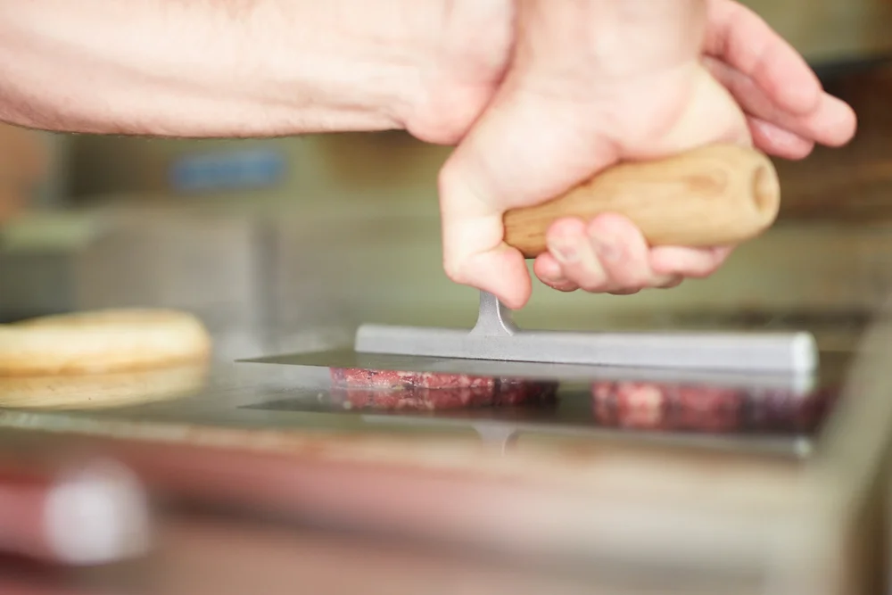

Serial Griller is run by us — Dave and Keren Kurth. We got the idea to create our own burgers after the disappointment we shared with burgers when we ate out. All we really wanted was a classic American style cheeseburger, but all too often we were served up burgers that failed to impress. Too much bread, dried out patties, patties that tasted like meatloaf.
We started playing around with recipes at home and doing a little research, before long we had a pretty amazing burger happening and we needed to share these with others. We made them for friends and family and they agreed, these burgers were good, really good! And we were having fun. Imagine we said, if we could make a living doing this. And so the dream began.
A smash burger has a beef patty that has been cooked smash style. First the select cuts of prime beef are ground and then formed into balls. The ball of meat is placed on a hot chrome plated grill and immediately smashed down onto the grill with a super high-tech tradies trowel.
Despite popular belief this does not give you a dried out meat patty. What happens is the Maillard Reaction — also known as the browning reaction.
The Maillard Reaction is a series of reactions that happens when protein rich foods are heated. It's what creates the crust on your steak, the golden brown colour on your toast and the complex, pleasing aromas and flavours that accompany browning. It's the smell of a steakhouse and fresh bread from the oven. It doesn't just make meat taste good, it actually makes it taste meatier.
Cooking our burgers smash style improves its flavour as it maximises contact with the grill, increasing the surface area directly in contact with the hot metal and maximising browning. Smashing allows you to get a deep brown crust before the interior over cooks and dries out — even with a relatively small patty. This is why we have designed our burgers with two 75gm patties, so we can have twice the amount of ultimate crust as well as being juicy and delicious.
